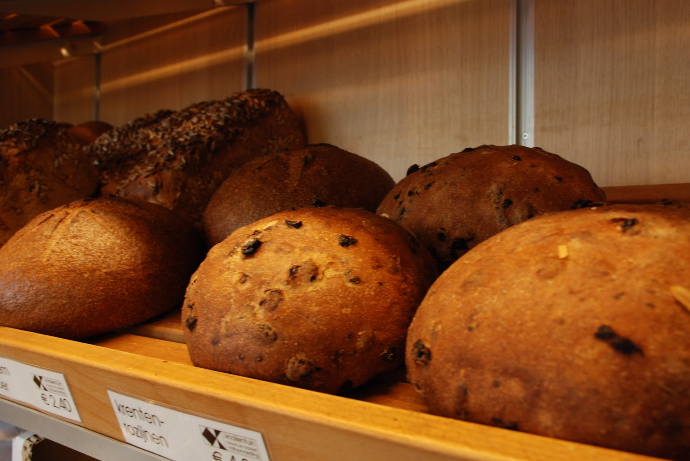
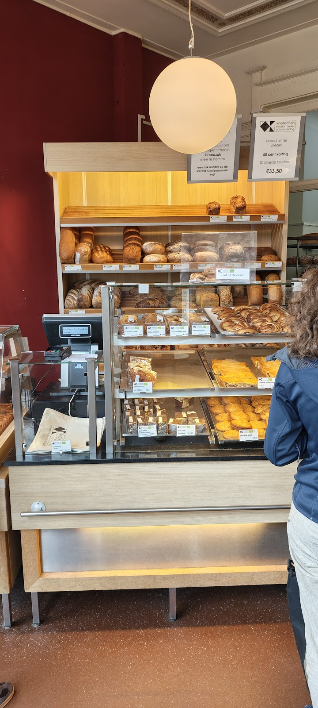
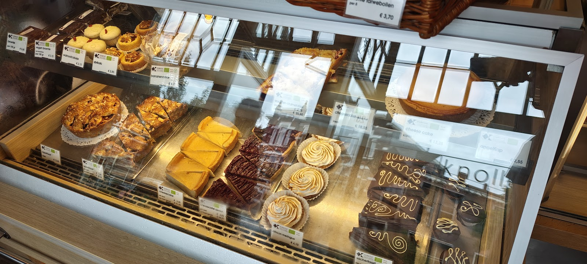
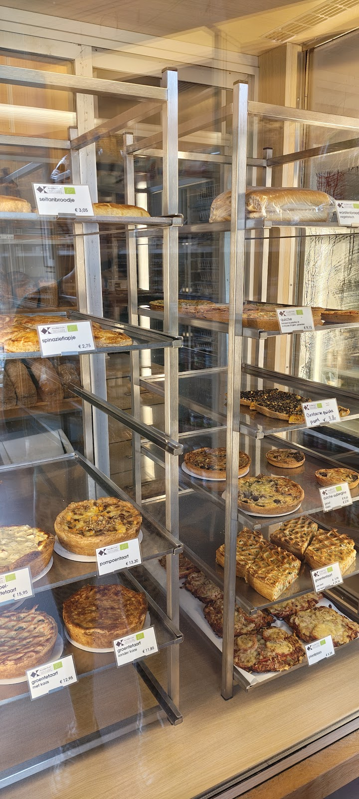
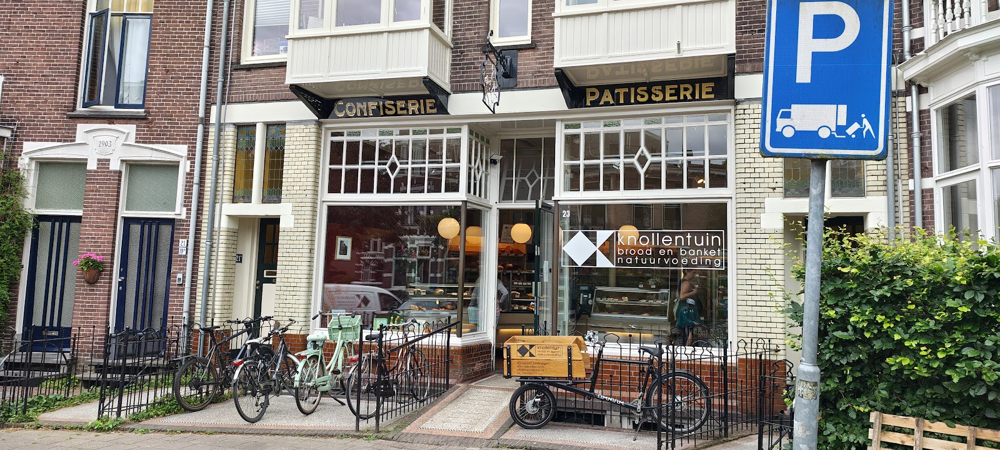
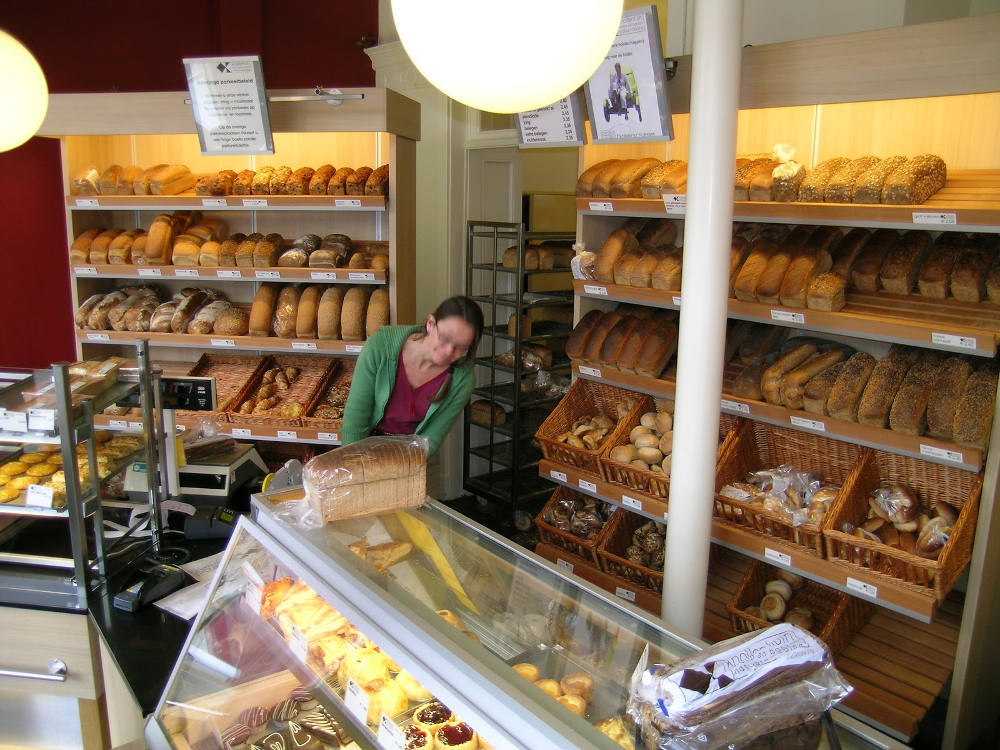
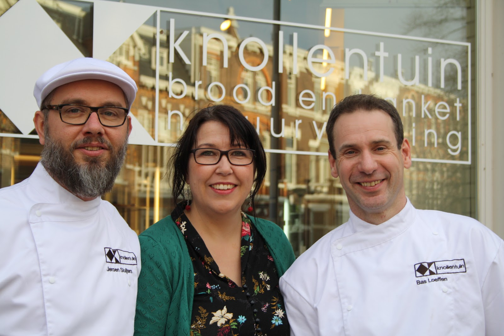

al ons brood en banket bakken we zelf.
ook de croissant.
Sinds 1974 bakt De Knollentuin in Bottendaal ambachtelijk brood en banket. Honderd procent biologisch en vegetarisch, met de beste biologische ingrediënten en op molenstenen gemalen granen.
Open maandag tot en met vrijdag van 8:30 tot 17:30, zaterdag van 8:30 tot 15:00.

krentenrozijnen en desem, net uit de oven
desem, volkoren en licht
Wij hebben een groot aantal verschillende desem- en gistbroden. Sommige bakken we alleen op bepaalde dagen, dat staat erbij. Een greep uit het assortiment, met prijzen voor een half en een heel brood.

desem
- desem tarwe€2,00 / €3,90
- desem spelt€2,95 / €5,80
- desem zonnepit€2,65 / €5,20
- desem spelt pompoenpit€3,45 / €6,80
- Doorniks brood vr en za€3,25 / €6,40
- desem krentenrozijnen vr en za€3,80 / €7,50
volkoren
- tarwe€1,95 / €3,75
- grof volkoren€2,20 / €4,25
- klooster€2,55 / €5,00
- spelt zonnepit€3,30 / €6,45
- tarwe meerzaden€2,55 / €5,00
- tarwe gerst wo t/m za€2,45 / €4,80
licht
- licht tarwe€2,05 / €4,00
- karnemelk€2,75 / €5,35
- tijger€2,60 / €5,10
- haver€2,90 / €5,70
- Frans bierbrood di t/m za€3,70 / €7,30
onze aanraders
- focaccia groot
- Frans land di t/m za
- pain de porcelaine
- seitanbroodje
voor bij de koffie, en voor bij het eten

zoet banket
Appeltaart, ook met honing. Cheesecake, citroen meringue, sachertaart, appelflappen en amandelbroodjes. Cake naturel, kaneel, walnoot of chocolade. En een vegan brownie.

hartig
Quiches, groentetaart met of zonder kaas, pompoentaart, aardappelcourgettetaart, spinazieflapjes en het seitanbroodje.
zeezout, geen bakkerszout
In ons brood gaat zeezout. Wij voegen dus, anders dan de meeste niet-biologische bakkers, geen extra jodium toe.
Heeft u meer jodium nodig, bijvoorbeeld door een veganistisch dieet of zwangerschap? Dan is ons zeewierbrood een goed alternatief. Het zeewierbroodje bakken we op zaterdag.
En dat we alles zelf maken, ook de croissant? Natuurlijk, zou je denken. Maar bij de Keuringsdienst van Waarde zagen we dat het lang niet overal meer zo gaat.
bestel twee dagen van tevoren
Wilt u brood, een taart of een quiche ophalen? Bestel dan minimaal 2 dagen voor het ophalen. Zo kunnen we iedereen zo goed mogelijk voorzien van lekker brood, gebak en andere lekkernijen.
een statig pand in Bottendaal
Achter de oude gevel met Confiserie en Patisserie aan de Fransestraat liggen de planken vol brood. Fiets ervoor, even binnen, en u staat met een warm brood weer buiten.



wat klanten zeggen
4,7 van 5 sterren op Google, uit 186 reviews
"Laatst was ik in Arnhem eten en dat brood was zo geweldig dat ik het personeel vroeg naar waar het brood vandaan kwam. Zo kwam ik terecht bij deze bakker. Van de bakker kreeg ik zijn beste brood mee. Er is maar één woord voor: perfectie! Wauw, wat een heerlijk brood. Ik kan het iedereen aanraden."
"Gevestigd in een statig pand in Bottendaal. Het assortiment is groot en de kwaliteit is zeer hoog. Een scala van diverse speciaal broden, broodjes, heerlijke zoetigheden en hartige quices. Dit allen eerlijk en biologisch. Daarnaast zijn de medewerkers zeer vriendelijk en gastvrij."
"De Knollentuin is fantastisch. Altijd heerlijk eten, altijd vriendelijk en blij personeel. Altijd druk maar nooit lang wachten."
"Prachtig pand. Goede bakkerij met alleen maar biologische producten. Heerlijk brood en andere lekkere dingen"
openingstijden
| maandag | 8:30 tot 17:30 |
| dinsdag | 8:30 tot 17:30 |
| woensdag | 8:30 tot 17:30 |
| donderdag | 8:30 tot 17:30 |
| vrijdag | 8:30 tot 17:30 |
| zaterdag | 8:30 tot 15:00 |
| zondag | gesloten |
Met kerst, op 25 en 26 december, zijn wij gesloten.